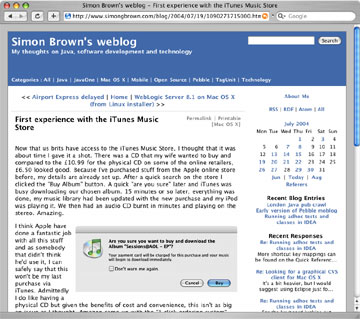

@header@

<table width="100%" cellspacing="0" cellpadding="8" class="item">
  <tr class="itemHeader">
    <td colspan="2">
      Pebble weblog
    </td>
  </tr>
  <tr class="itemBody">
    <td width="50%" valign="top">
      <p>
        <ol>
          <li><a href="introduction.html">Introduction</a></li>
          <li><a href="tomcat-quick-start.html">Quick Start with Tomcat</a></li>
          <li><a href="getting-started.html">Getting Started</a></li>
          <li><a href="configuration.html">Configuring your Blog</a></li>
          <li><a href="categories.html">Categories</a></li>
          <li><a href="blog-entries.html">Blog Entries</a></li>
          <li><a href="images.html">Images</a></li>
          <li><a href="files.html">Files</a></li>
          <li><a href="comments.html">Comments</a></li>
          <li><a href="trackbacks.html">TrackBacks</a></li>
          <li><a href="static-pages.html">Static Pages</a></li>
          <li><a href="referers.html">Referers</a></li>
          <li><a href="update-pings.html">XML-RPC Update Pings</a></li>
          <li><a href="blogger-api.html">Blogger API</a></li>
          <li><a href="metaweblog-api.html">MetaWeblog API</a></li>
          <li><a href="themes.html">Themes</a></li>
          <li><a href="team-blogs.html">Multi-contributor and Team Blogs</a></li>
          <li><a href="multiuser-blogs.html">Multi-user Blogs</a></li>
          <li><a href="private-blogs.html">Private Blogs</a></li>
          <li><a href="installation.html">Server Specific Installation Details</a></li>
          <li><a href="writing-decorators.html">Writing blog entry decorators</a></li>
        </ol>
      </p>
    </td>
    <td width="50%" align="center" valign="middle">
      <a href="http://www.simongbrown.com/blog/"></a>
    </td>
  </tr>
</table>

@footer@